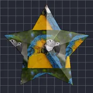

Poliedro estelar

Coloca la capa sobre una estrella cuyas puntas se elevan hacia una arista por delante y por detrás, con luz y profundidad.
Ajustes
| Ajuste | Tipo | Rango | Predeterminado |
|---|---|---|---|
| Orientación α | Ángulo | -3600° a 3600° | 0° |
| Orientación β | Ángulo | -3600° a 3600° | 0° |
| Orientación γ | Ángulo | -3600° a 3600° | 0° |
| Rotación X | Ángulo | -3600° a 3600° | 0° |
| Rotación Y | Ángulo | -3600° a 3600° | 0° |
| Rotación Z | Ángulo | -3600° a 3600° | 0° |
| Tamaño | Número | 0 a 100000 | 50 |
| Profundidad | Número | -100000 a 100000 | 50 |
| Longitud de las puntas | Número | 0 a 100000 | 100 |
| Suavizado | Número | 0 a 1 | 0 |
| Puntas | Número | 2 a 100 | 5 |
| Posición | Punto (X, Y) | -100000 a 100000 | 0, 100 |
| Posición Z | Número | -100000 a 100000 | 500 |
| Escala | Número | 0.01 a 100 | 3 |
| Radio | Número | 0.02 a 5 | 0.95 |
| Posición | Punto (X, Y) | -5000 px a 5000 px | 0 px, 0 px |
| Escala | Número | 0.05 a 10 | 1 |
| Perspectiva | Número | 0 a 1 | 0.5 |
| Intensidad de la luz | Número | 0 a 10 | 1 |
| Brillo | Número | 0 a 1 | 0.8 |
| Especularidad | Número | 0.1 a 500 | 30 |
| Ambiente | Número | 0 a 1 | 0.1 |
| Color | Color | – | #FFFFFF |
| Dirección | Punto (X, Y) | -100000 a 100000 | 75, -75 |
| Elevación | Número | -100000 a 100000 | 100 |
| Sombreado | Número | 0 a 1 | 0.6 |
| Ángulo de luz | Ángulo | -3600° a 3600° | 135° |
| Brillo | Número | 0 a 1 | 0.3 |
| Iluminación | Opción | Clásica, Suave, Directa | Clásica |
| Ambiente | Número | 0 a 2 | 0.03 |
| Altura de la luz | Número | 0 a 20 | 3 |
| Color de la luz | Color | – | #FFFFFF |
| Nitidez del brillo | Número | 1 a 200 | 15 |
| Espejo | Activado o desactivado | – | Desactivado |
| Repetir X | Número | 0.01 a 100 | 1 |
| Repetir Y | Número | 0.01 a 100 | 1 |
| Ángulo de textura | Ángulo | -3600° a 3600° | 0° |
| Recorte | Número | 0.01 a 100 | 1 |
| Textura | Opción | Ajustar, Mosaico, Estirar | Ajustar |
| Repetir X | Número | 0.01 a 100 | 1 |
| Repetir Y | Número | 0.01 a 100 | 1 |
| Espejo | Activado o desactivado | – | Desactivado |
| Ángulo de textura | Ángulo | -3600° a 3600° | 0° |
| Desplazamiento de textura | Punto (X, Y) | -100 a 100 | 0, 0 |
| Recorte de textura | Número | 0.05 a 10 | 1 |
| Anclaje de textura | Opción | Centro, Esquina | Centro |
| Estilo | Opción | Clásico, Estándar | Estándar |